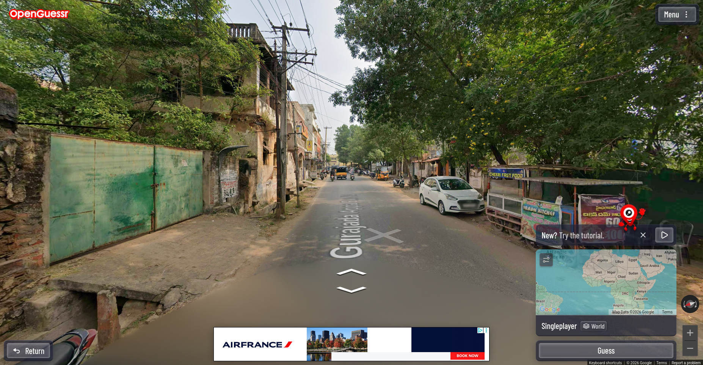
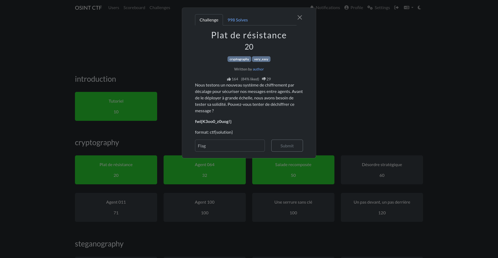
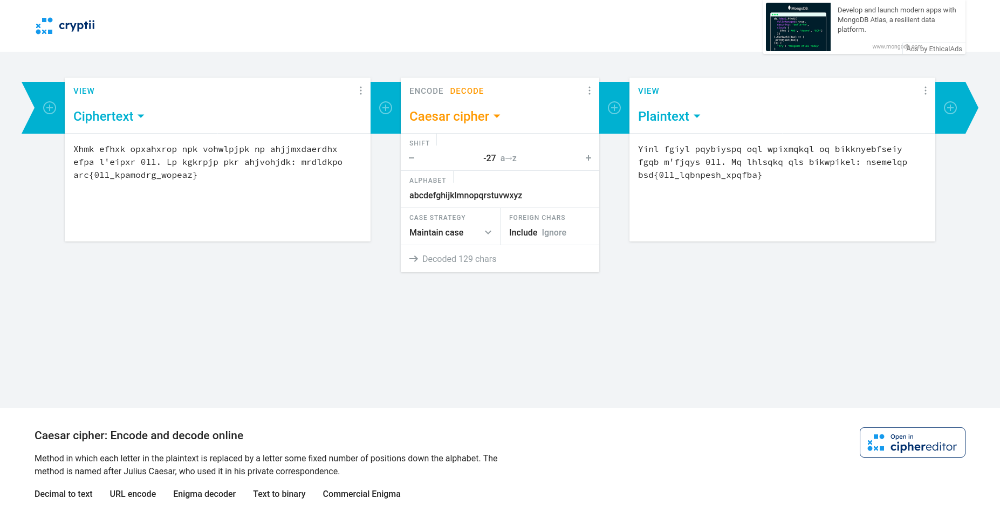
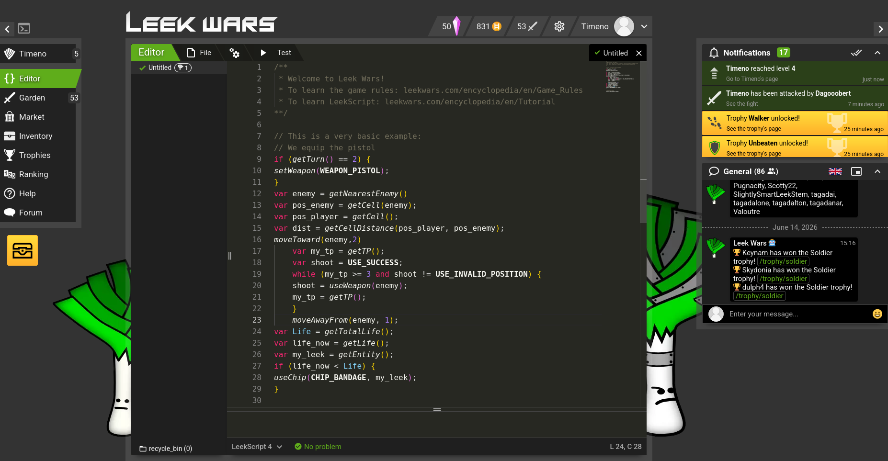
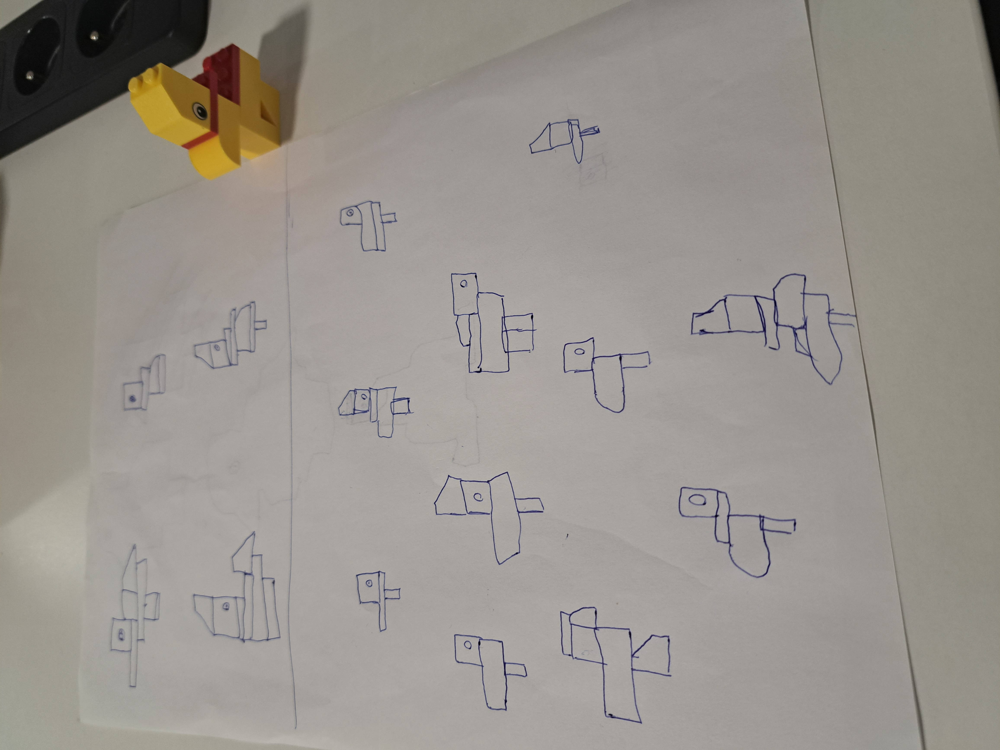
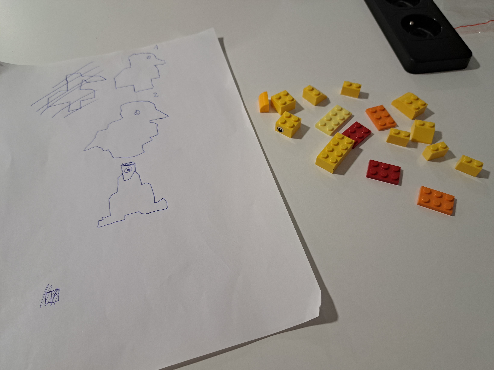
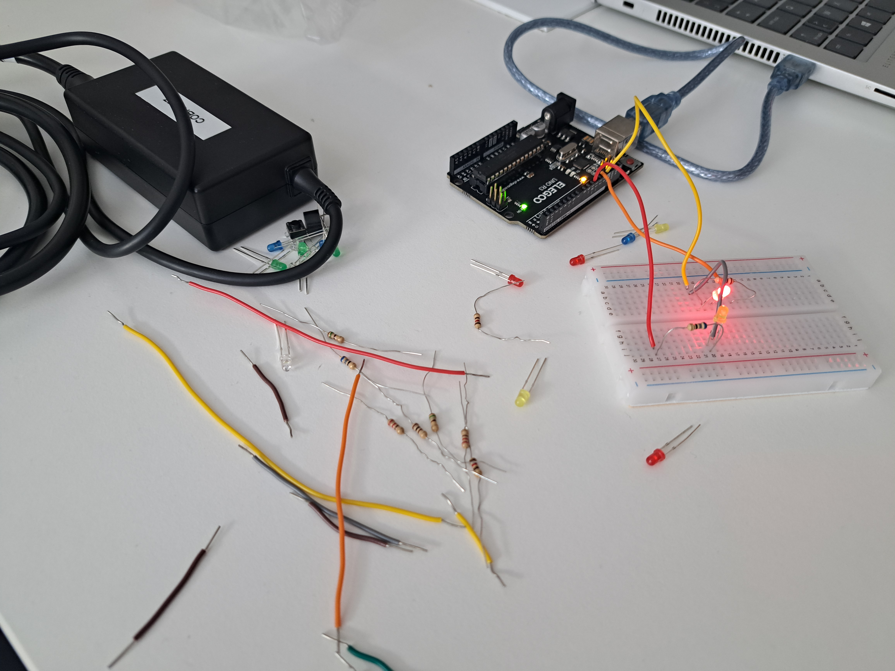

Jour 1 :
Le matin, Zineb nous a expliqué comment allait se passer le stage. Puis, j'ai joué à Top Ten avec un encadrant et les personnes autour de ma table afin d'apprendre à nous connaître. Ensuite, un encadrant a installé tous les logiciels dont j'avais besoin pour coder sur un PC prêté par Epitech. L'après-midi, j'ai commencé à coder mon portfolio à l'aide d'un guide qu'ils nous avaient fourni.
Jour 2 :
Le matin, j'ai continué mon portfolio puis j'ai assisté à une conférence sur la cybersécurité. L'après-midi, j'ai découvert ce qu'était l'OSINT sur OpenGuessr et j'ai fait du "Capture The Flag".



Jour 3 :
Le matin j'ai amélioré l'IA de mon poireau sur Leek Wars. J'ai assisté à une conférence sur les IA et les changements qu'elles ont apportés. L'après-midi, je devais coder un décodeur de César pour sauver Papi Champi, puis j'ai dessiné les contours du blason de mon groupe (une étoile).

Jour 4 :
Le matin, je devais faire le plus de canard possible en dessinant d'abord et assembler les pièces après et inversement pour savoir s' il était mieux de le dessiner avant ou de le réaliser avant. J'ai assisté à une conférence sur Apprendre à Apprendre. L'après-midi, j'ai codé le jeu Simon avec Arduino.



Jour 5 :
Le matin, j'ai assisté à une conférence sur l'IA. L'après-midi, j'ai continué mon portfolio.
Jour 6 :
Le matin, des étudiants d'Epitech nous ont montrés leurs projets. J'ai assisté à une conférence sur les entreprises de service numérique (ESN) et les métiers du numérique. L'après-midi, j'ai continué mon portfolio.
Jour 7 :
Le matin, j'ai classé 15 objets par ordre d'importance pour rejoindre le vaisseau mère situé à 300 km de moi sur Lune. J'ai assité à une conférence sur l'IA où l'on a vu l'impact écologique, la géopolitique, la pénurie. L'après-midi, j'ai codé une IA imbattable au morpion.
Jour 8 :
Le matin, on a vu les différents métiers du jeu vidéo et à quels moments de la production ils interviennent. Puis, j'ai assisté à une conférence sur les métiers de la cyber. L'après-midi j'ai codé snake en Java Script.
Jour 9 :
Le matin, j'ai assisté à une présentation sur l'orientation et les métiers en informatique. L'après-midi, j'ai terminé mon portfolio.